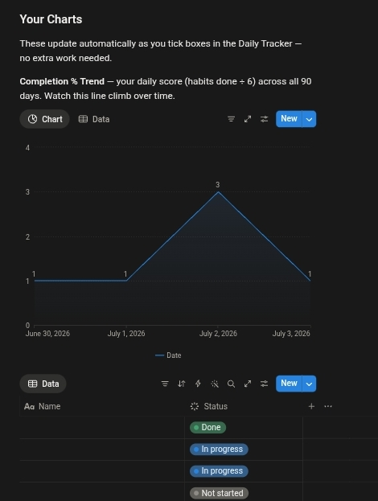

Start Here
Breaks down exactly how the habit lies to you and why you keep falling for it, so you finally understand the mechanism instead of just fighting it.
For remote workers, students, and freelancers who keep losing hours they can't get back
A structured Notion system that kills the habit at its source — the idle hours — instead of fighting it with willpower.

Instant access · No app to install · Works inside Notion
Your habit isn't a weakness. It's a liar. It whispers that one more scroll will fix something. It won't. It just moves you further from the day you meant to have.
If any of this sounds like you — keep reading. This is for you.
Staying stuck doesn't feel like a decision — it feels like nothing happening at all. But life keeps moving while you stay in the same spot, aware of it, hating it, still stuck in it. Every day you don't change this, you get a little less sure you actually can.
But there's a better way.

A 90-day system that closes the gap between who you are right now and who you actually want to be.
I built Rewired because I lived on the wrong side of this exact problem for years, and no amount of willpower ever fixed it. What worked was restructuring the idle hours before the pull even had a chance to start. I use this system myself, every day, and I'm building it in public — improving it in real time as founding members put it to work.
Start Rewiring — ₦10,000Breaks down exactly how the habit lies to you and why you keep falling for it, so you finally understand the mechanism instead of just fighting it.
4 daily anchors that starve the habit of the idle oxygen it needs to survive, built directly into your day.
One specific move to make the instant the pull shows up, so the urge gets killed on contact instead of building momentum.
A pre-built 90-day tracker with 6 fixed habits, so you never have to decide what to track or build the system yourself.
2 auto-updating charts so you can watch your consistency climb in real time instead of guessing whether it's working.
A short guide for the day you slip, so one bad night doesn't undo 60 good days.
I'm not a therapist. I'm someone who lived on the wrong side of this exact problem for years — the same 2am loop, the same reinstalled apps, the same broken promises to myself. What finally worked wasn't more discipline. It was restructuring the hours where the habit actually starts.
I'm building Rewired in public, using the system myself every single day, and improving it in real time based on how founding users actually use it.

Rewired doesn't have a wall of testimonials yet — because this is the founding cohort, and that's exactly the point. I built this system, I use it daily, and every version gets sharper based on how real users move through it.
Founding members lock in benefits the next batch won't get: free lifetime updates and the Habit Swap List, permanently. Once this cohort closes, updates move to a separate paid tier.
You're not joining a finished product. You're joining day one of a system that's actively being sharpened, in public, with your results shaping the next version.
A complete system worth ₦35,000 — yours for one low price.
Start Here + My Day + Interrupt + Daily Tracker + Progress dashboards + Relapse Protocol
Value: ₦15,000Every future version, free, forever.
Value: ₦9,000Backup habits if one of the 6 doesn't fit your life.
Value: ₦11,000💳 Secure checkout · 🔒 Instant access · ✅ Lifetime updates for founding members
There's no refund policy here, and that's intentional. You're not buying a Notion template. You're buying the version of you that isn't stuck anymore. Follow it for 90 days and you won't recognize who you were.
The only guarantee here is you, followed for 90 days.
A complete Notion workspace: Start Here, My Day, Interrupt, Daily Tracker, Progress dashboards, and the Relapse Protocol. You get instant access as a Notion link — duplicate it into your own workspace and it's yours.
No. The Start Here page walks you through the whole workspace. If you can check a box and type in a text field, you can run this system.
Most tools fight the habit head-on, in the moment it's already strongest. Rewired restructures the idle hours before the pull even starts, so there's less to fight in the first place.
That's what the Relapse Protocol is for. One bad night doesn't undo 60 good days — it gives you a specific move to make the next morning so the streak doesn't turn into a spiral.
It's a Notion system, not a course or an app. There's nothing to install. You duplicate a Notion template into your own workspace and use it daily for 90 days.
Blocking apps fight the symptom. Rewired addresses the idle hours where the urge actually forms, and gives you a specific interrupt move and daily structure — not just a locked screen.
Yes, for founding members. As a founding member you get every future version free, forever. Once this cohort closes, updates move to a separate paid tier for new buyers.
There isn't one, and that's by design. This system asks for a 90-day commitment, not an easy exit. If you're not ready to commit to that, this isn't the right time to buy.
The next cohort doesn't get free lifetime updates or the Habit Swap List. This batch does.
Start Rewiring — ₦10,000You can keep doing what you've been doing and see where you are in 90 days. Or you can Rewire it, starting now.
Start Rewiring — ₦10,000Instant Notion access · No refunds, no shortcuts, no way out but through